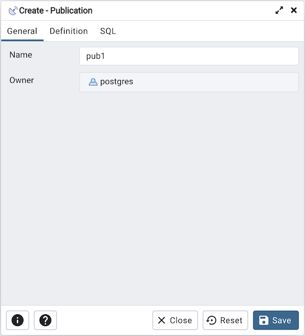
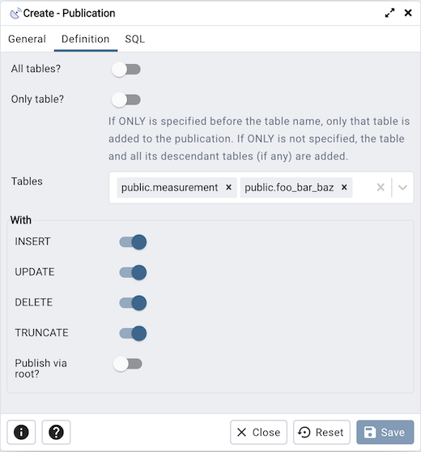
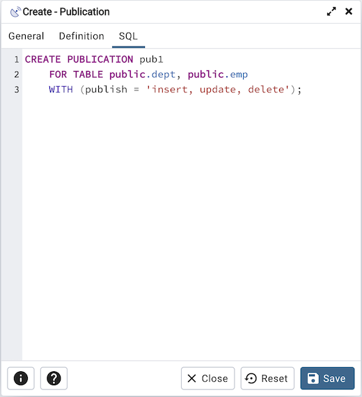

Publication Dialog¶
Logical replication uses a publish and subscribe model with one or more subscribers subscribing to one or more publications on a publisher node.
Use the publication dialog to create a publication. A publication is a set of changes generated from a table or a group of tables, and might also be described as a change set or replication set.
The publication dialog organizes the development of a publication through the following dialog tabs: General and Definition. The SQL tab displays the SQL code generated by dialog selections.
Use the fields in the General tab to identify the publication:
Use the Name field to add a descriptive name for the publication. The name will be displayed in the pgAdmin tree control.
The Owner field takes the name of the user automatically as current connected user. You can change the owner after creating publication using alter publication.
Click the Definition tab to continue.
Use the Definition tab to set properties for the publication:
Move the switch next to All tables? to Yes to replicate all the tables of the database, including tables created in the future.
Move the switch next to Only table? to Yes to replicate only the listed tables excluding all its descendant tables.
Specify a table or list of tables separated by a comma in Tables field to replicate all the listed table.
Use the With section to determine which DML operations will be published by the new publication to the subscribers. Move the switch next to INSERT, UPDATE, DELETE, or TRUNCATE to No if you do not want to replicate any of these DML operations from Publication to Subscription. By default, all the switches are set to Yes allowing all the DML operations.
备注
A published table must have a “replica identity” configured in order to be able to replicate UPDATE and DELETE operations. You can change with ALTER TABLE statement. For more information on replica identity see Logical Replication Publication.
Click the SQL tab to continue.
Your entries in the Publication dialog generate a SQL command (see an example below). Use the SQL tab for review; revisit or switch tabs to make any changes to the SQL command.
Example
The following is an example of the sql command generated by user selections in the Publication dialog:
The example creates a publication named pub1 that is owned by postgres. It allows replication of all the DML operations.
Click the Info button (i) to access online help.
Click the Save button to save work.
Click the Close button to exit without saving work.
Click the Reset button to restore all the default settings.